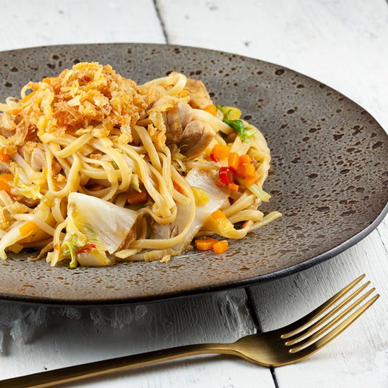
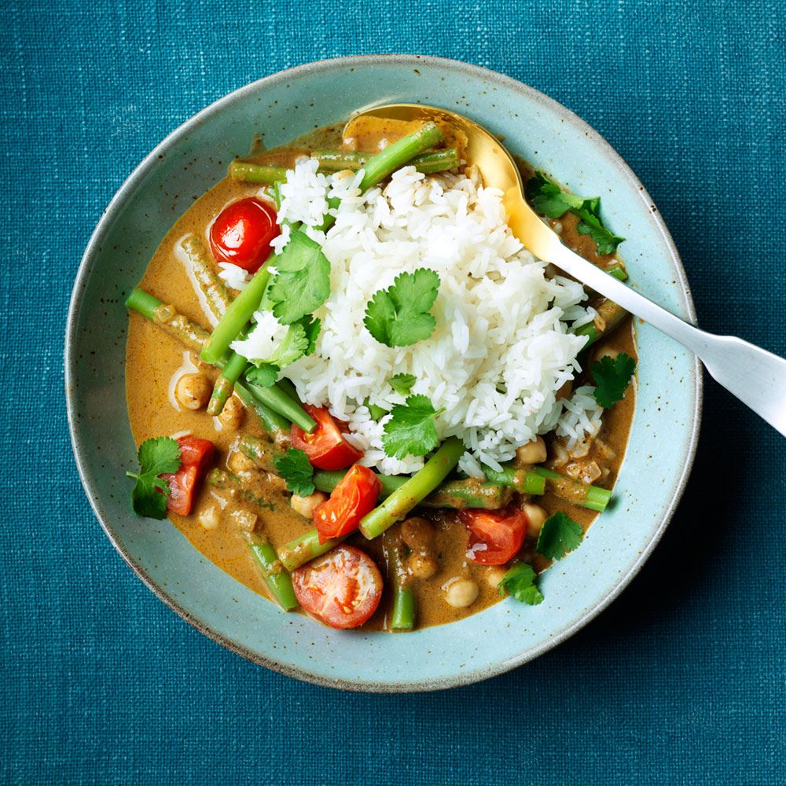
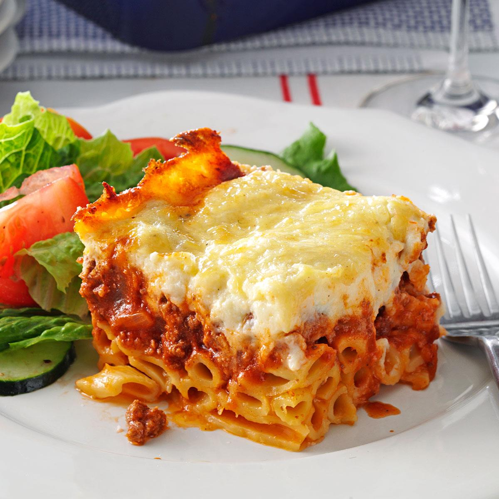

Recepten Hoofgerecht
Hier vind je heerlijke hoofdgerechten met vlees, kip, vis, garnalen of vegetarisch. Probeer gerechten uit bijvoorbeeld de Italiaanse, Hollandse of Oosterse keuken zoals gevulde varkensrolletjes, parmezaanse kip, pastaschotel of mihoen met gamba's.

Een authentieke, heerlijke risotto met de herfstsmaak van paddestoelen. Naar smaak kunt u de paddestoelen variëren, zeker als wilde paddestoelen beschikbaar zijn. Controleer de gaarheid van de rijst [...]
Recept van: MYLEEN
Recept van: MYLEEN

"Dit smakelijke Indonesische noedelgerecht maakte mijn moeder vroeger vaak. Je kunt varieren door je eigen favoriete groenten en vlees toe te voegen."
Recept van: Bart "Dagdixo" Coppens

Het eenvoudigste en meest heerlijke kiprecept dat ik ken - iedereen kan het maken! Rooster een paar extra tenen knoflook om op wat knapperig brood te smeren als heerlijk voorgerecht voor deze maaltijd.
Recept van: BettyBoothroyd

Geïnspireerd door een geheim recept van mijn favoriete Italiaanse restaurant uit de buurt. Na een beetje vallen en opstaan denk ik dat ik weet hoe ik het moet klaarmaken. Romige witte saus en zalm [...]
Recept van: Shane Roberts
Recept van: Shane Roberts

Een eenvoudige, exotische curry, vol en romig, mild gekruid en met ontzettend veel smaak. Serveren met naanbrood of rijst.
Recept van: YAKUTA
Recept van: YAKUTA

Pastitsio is een soort Griekse lasagne, afgemaakt met een verrukkelijke witte saus. Dit recept voorziet in een grote pastitsio en is gewoonweg geweldig. Iedereen vindt dit lekker en het is de moeite van het [...]
Recept van: ALKHATIB
Recept van: ALKHATIB